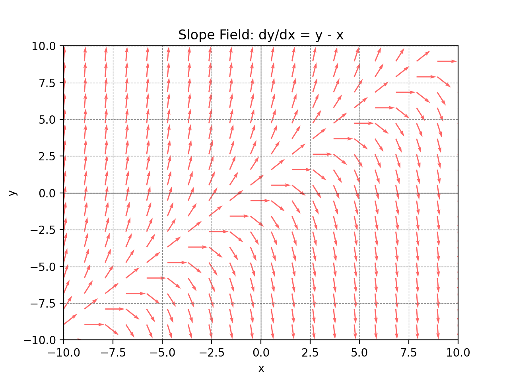
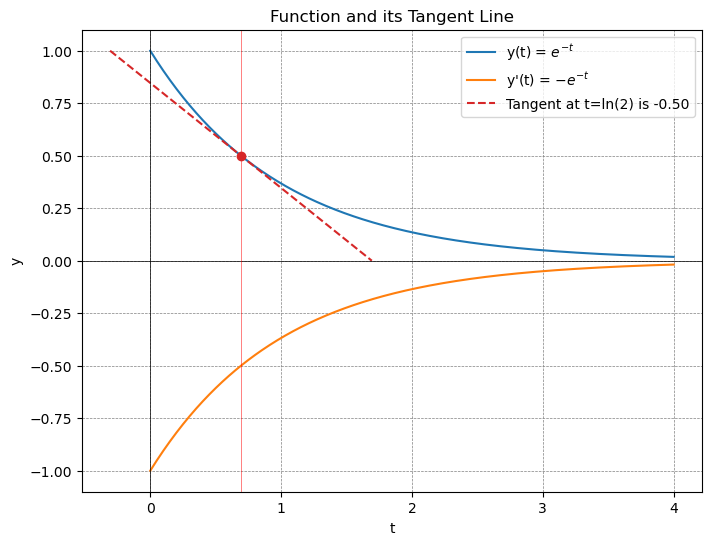

Slope fields, also known as direction fields or vector fields, provide a graphical representation of the solutions to first-order ordinary differential equations (ODEs) of the form \(\frac{dy}{dx}=f(x)\). They offer a powerful tool to visualize the behavior of solutions without solving the differential equation analytically, allowing insights into the qualitative properties of solutions.
Constructing Slope Fields
Select a Grid: Choose a set of points \((x,y)\) in the region of interest.
Compute SLopes: Evaluate \(f(x,y)\) at each point to determine the slope of the segment or arrow at that point
Plot Arrows: Draw an arrow or a short line segment at each point in the direction of the computed slope

import numpy as np
import matplotlib.pyplot as plt
# Define the function representing dy/dx.
# In this case, dy/dx = y - x, but you can replace this with any other function of x and y
def slope_function(x, y):
return y - x
# Define the x and y ranges for which we want to plot the slope field
x = np.linspace(-10, 10, 20) # Adjust the range and number of points as needed
y = np.linspace(-10, 10, 20) # Adjust the range and number of points as needed
# Create a grid of points (x, y)
X, Y = np.meshgrid(x, y)
# Calculate the slopes (u, v) at each point (x, y)
U = 1
V = slope_function(X, Y)
# Normalize the arrows to get a uniform appearance
N = np.sqrt(U**2 + V**2)
U /= N
V /= N
# Create the plot
plt.quiver(X, Y, U, V, angles='xy', scale_units='xy', scale=1, color='r', alpha=0.6)
plt.xlim([-10, 10]) # Adjust the x-limits of the plot as needed
plt.ylim([-10, 10]) # Adjust the y-limits of the plot as needed
plt.axhline(0, color='black',linewidth=0.5)
plt.axvline(0, color='black',linewidth=0.5)
plt.grid(color = 'gray', linestyle = '--', linewidth = 0.5)
plt.title('Slope Field: dy/dx = y - x')
plt.xlabel('x')
plt.ylabel('y')
plt.show()
Separable
A first order differential equation involves a function's first derivative and no higher order derivatives.
We can write a first-order differential equation as
$$\frac{dy}{dx}=f(y,x)$$
where f is a real-valued function
The simplest example would be
$$y'(t)=k$$
We can write in the form
$$\frac{dy}{dx}=k$$
$$dy=kdx$$
$$y=kx+c$$
This generates a family of functions. With initial conditions, we can specify further.
$$\frac{dy}{dx}=ay$$
We can separate the variables
$$\frac{dy}{y}=adx$$
$$\int\frac{dy}{y}=\int adx$$
$$ln(y)+c_1=ax+c_2$$
We can combine \(c_1\) and \(c_2\) into another constant, which we will just call c.
$$ln(y)=ax+c$$
Exponentiating
$$y=e^{ax+c}$$
By exponenial rules, we can separate addition in the exponent as multiplication
$$y=e^{ax}e^{c}$$
Since e raised to a constant is another constant, we can just write \(e^{c}\equiv k\)
$$y=ke^{ax}$$

Exponential Differential Equation
import numpy as np
import matplotlib.pyplot as plt
# Define the function and its derivative
def f(t):
return np.exp(-t)
def dfdt(t):
return -f(t)
def tangent_line(x, x0, y0):
return dfdt(x0) * (x - x0) + y0
# Generate x values
x = np.linspace(0, 4, 400)
# Choose the point where the tangent touches
x0 = 2
y0 = f(x0)
# Calculate y values for the function, its derivative, and the tangent line
y = f(x)
y_tangent = tangent_line(x, x0, y0)
# Plotting
plt.figure(figsize=(8, 6))
plt.plot(x, y, label=r'y(t) = $e^{-t}$', color='blue')
plt.plot(x, -y, label=r"y'(t) = $-e^{-t}$", color='tab:orange')
plt.plot(x, y_tangent, label='Tangent at t=' + str(x0), linestyle='--', color='red')
plt.scatter([x0], [y0], color='green', zorder=5) # plot the point where tangent touches
plt.title("Function and its Tangent Line")
plt.xlabel("t")
plt.ylabel("y")
plt.axhline(0, color='black',linewidth=0.5)
plt.axvline(0, color='black',linewidth=0.5)
plt.grid(color = 'gray', linestyle = '--', linewidth = 0.5)
plt.legend()
# Display the plot
plt.show()
Linear Equation
A linear equation is of the form
$$\frac{dy}{dx}+p(x)y=q(x)$$
where p and q are functions.
For these types of problems, the use of an integrating factor is advised.
We use an integreating factor of the form
$$\mu(x)=e^{\int p(x)dx}$$
Why is this our choice?
When multiplied, we get
$$\mu(x)\frac{dy}{dx}+\mu(x)p(x)y=\mu(x)q(x)$$
Note that
$$\frac{d}{dx}e^{\int P(x)dx}=P(x)e^{\int P(x)dx}$$
$$=\mu(x)P(x)$$
We have an equation that is the result of the product rule
$$\frac{d(\mu(x)y)}{dx}=\mu(x)y'+\mu'(x)y$$
$$=\mu(x)\frac{dy}{dx}+\mu(x)p(x)y$$
So now we get
$$d(\mu(x)y)=q(x)\mu(x)$$
Integrating gives
$$\mu(x)y+c=\int q(x)\mu(x)dx$$
$$y=\int q(x)\mu(x)dx+\frac{c}{\mu(x)}$$
Exact Equations
An exact differential equation is of the form
$$M(x,y)dx+N(x,y)dy=0$$
We seek to find a function F(x,y). We can write the total differential of F as
$$dF=\frac{\partial F}{\partial x}dx+\frac{\partial F}{\partial y}dy$$
Matching the partials, we hope to find functions that correspond to
$$g(x,y)=\frac{\partial F}{\partial x}$$
and
$$h(x,y)=\frac{\partial F}{\partial y}$$
If the differential equation is indeed exact, then we would have
$$M(x,y)=\frac{\partial F}{\partial x}$$
$$N(x,y)=\frac{\partial F}{\partial y}$$
To test if this is the case, we can apply symmetry of second derivatives (sometimes called Schwarz's Theorem or Clairaut's Theorem).
Under certain conditions the following identity holds:
$$\frac{\partial^2 f}{\partial x \partial y}=\frac{\partial^2 f}{\partial y\partial x}$$
Therefore, if
$$\frac{\partial}{\partial y}M(x,y)=\frac{\partial}{\partial x}N(x,y)$$
then we know that we have an exact differential equation.
Since dF=0
$$F(x,y)=C$$
In order to find F(x,y), you can integrate M with respect to x and N with respect to y.
Because this is a multivariate equation, your "constant" of integration is a function of the variables that you didn't integrate with respect to, because when taking the derivative, those would go to 0.
To find the actual F(x,y), you must take that into account.
Nonlinear First Order Equations
Bernoulli Differential Equation
Bernoulli's equation is a nonlinear first order differential equation given by
$$y'+P(x)y=Q(x)y^n$$
where n is a real number. Bernoulli’s equation can be linearized by substituting
\(v=y^{1-n}\), leading to a linear differential equation in v.
Exercises
Slope Fields
Construct a slope field for \(\frac{dy}{dx}=y\)
Construct a slope field for \(\frac{dy}{dx}=x\)
Construct a slope field for \(\frac{dy}{dx}=-\frac{y}{2}\)